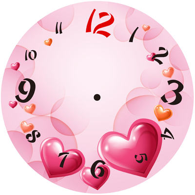

<!DOCTYPE HTML PUBLIC "-//W3C//DTD HTML 4.01//EN" "http://www.w3.org/TR/html4/strict.dtd">
<html lang="en">
<head>
	<meta http-equiv="Content-Type" content="text/html;charset=UTF-8">
	<title>表练习</title>
</head>
<style>
	 #canvas{
      	/*border:1px solid #000;*/
      	margin: 50px auto;
      	border-radius: 50%;
      	background-image:url(biao.png);
      	display: block;
      	margin:0 auto;
      }
</style>
<body>
    <canvas id="canvas" width="400" height="400"></canvas>
       <!--  -->
    <script>
      var canvas=document.querySelector('#canvas');
      var ctx=canvas.getContext('2d');
      console.dir(ctx)
      var drawClock=function(){
        ctx.clearRect(0,0,400,400)
         var r=function(deg){
            return Math.PI/180*deg;
        } 
        ctx.save()
        ctx.translate(200,200)
///画秒针
       var now = new Date()
       var second=now.getSeconds();
           ctx.save()
           ctx.beginPath()
           ctx.rotate(second*r(6))
           ctx.moveTo(0,5)
           ctx.lineTo(0,30)
           ctx.moveTo(5,0)
           ctx.lineCap="round"
           ctx.moveTo(0,-5)
           ctx.lineTo(0,-110)
           ctx.lineWidth=7
           ctx.strokeStyle="#EC848A"
           ctx.stroke()
           ctx.closePath()
           ctx.restore()

 //画分针
         var now = new Date()
         var m=now.getMinutes()
         var s=now.getSeconds()
         var deg=360*((m*60+s)/3600);
           ctx.save()
           ctx.beginPath()
           ctx.rotate(r(deg))
           ctx.lineCap="round"
           ctx.moveTo(0,5)
           ctx.lineTo(0,30)
           ctx.moveTo(5,0) 
           ctx.moveTo(0,-5)
           ctx.lineTo(-5,-90)
           ctx.lineWidth=7
           ctx.strokeStyle="#EC848A"
           ctx.stroke()
           ctx.closePath()
           ctx.restore()
 //画时针
        var now = new Date() 
         var h=now.getHours()
         var m=now.getMinutes()
         var s=now.getSeconds()
         var deg=360*((h*60*60+m*60+s)/43200);
           ctx.save()
           ctx.beginPath()
           ctx.rotate(r(deg))
           ctx.lineCap="round"
           ctx.moveTo(0,5)
           ctx.lineTo(0,30)
           ctx.moveTo(5,0)
           ctx.arc(0,0,5,0,(r(360)))
           ctx.moveTo(0,-5)
           ctx.lineTo(0,-60)
           ctx.lineWidth=7
           ctx.strokeStyle="#EC848A"
           ctx.stroke()
           ctx.closePath()
           ctx.restore()
        ctx.restore()

        }
        drawClock()
        setInterval(drawClock,12)


       </script>
</body>
</html>